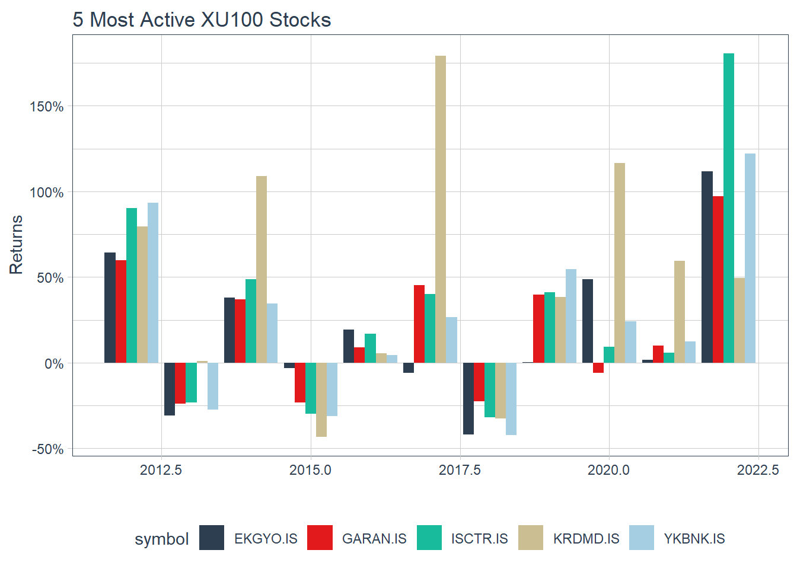

library(cluster)
library(factoextra)
library(dplyr)
library(ggplot2)
library(NbClust)
library(quantmod)
library(tibble)
library(tidyquant)
library(tidyr)
set.seed(1234)
# Delete the comment for downloading the data
# stock_list <- read.table("bist100_stocks.txt")
# stock_ohlc <- stock_list$V1 |> tq_get()
# saveRDS(stock_ohlc, file="stock_data.rds")
stock_ohlc <- readRDS("stock_data.rds")Diversified Portfolio with Stock Clustering
Introduction
Last time, we analyzed similar stocks in XU30 index and calculated each cluster’s mean return and risk.
Similar method can be used to diversify portfolio and minimizing the risk: we’ll again apply clustering methods to determine different subsets of stocks in the XU100 market. And we select one stock from each cluster and calculate their return and risk and try to beat the market.
Note: We assume that the index components have not changed over the time. For a more realistic calculation, the stocks added to and excluded from the index should also be taken into account.
Data
Read data:
Visualize annual returns of 5 stocks which has most volume:
top_5_by_vol <- stock_ohlc %>%
filter(symbol != "XU100.IS") %>%
group_by(symbol) %>%
summarise(Volume = sum(volume)) %>%
top_n(5)
stock_ohlc %>%
filter(symbol %in% top_5_by_vol$symbol) %>%
group_by(symbol) %>%
tq_transmute(select = adjusted,
mutate_fun = periodReturn,
period = "yearly",
col_rename = "yearly.returns") %>%
ggplot(aes(x = year(date), y = yearly.returns, fill = symbol)) +
geom_bar(position = "dodge", stat = "identity") +
labs(title = "5 Most Active XU100 Stocks",
y = "Returns", x = "", color = "") +
scale_y_continuous(labels = scales::percent) +
theme_tq() +
scale_fill_tq()
Calculate daily returns for each stock and the market:
daily_returns <- stock_ohlc %>%
group_by(symbol) %>%
tq_transmute(select = adjusted,
mutate_fun = periodReturn,
type = "log",
period = "daily",
col_rename = "daily.returns")Pivot the data:
daily_returns <- daily_returns %>%
pivot_wider(names_from = symbol, values_from = daily.returns)Check the NA counts:
colSums(is.na(daily_returns)) date XU100.IS AGHOL.IS AKBNK.IS AKCNS.IS AKSA.IS AKSEN.IS ALGYO.IS
0 80 0 0 0 0 0 0
ALARK.IS ALBRK.IS ALKIM.IS AEFES.IS ARCLK.IS ARDYZ.IS ASELS.IS AYDEM.IS
0 0 0 0 0 2111 0 2421
AYGAZ.IS BERA.IS BIMAS.IS BIOEN.IS BRISA.IS CCOLA.IS CANTE.IS CEMTS.IS
0 234 0 2763 0 0 2421 0
CIMSA.IS DEVA.IS DOHOL.IS DOAS.IS EGEEN.IS ECILC.IS EKGYO.IS ENJSA.IS
0 0 0 0 0 0 0 1593
ENKAI.IS ERBOS.IS EREGL.IS ESEN.IS FROTO.IS GLYHO.IS GOZDE.IS GUBRF.IS
0 0 0 2763 0 0 0 0
SAHOL.IS HLGYO.IS HEKTS.IS INDES.IS ISDMR.IS ISFIN.IS ISGYO.IS ISMEN.IS
0 312 0 0 1105 0 0 0
IZMDC.IS KRDMD.IS KARSN.IS KARTN.IS KERVT.IS KRVGD.IS KCHOL.IS KORDS.IS
0 0 0 0 0 2763 0 0
KOZAL.IS KOZAA.IS LOGO.IS MAVI.IS MGROS.IS MPARK.IS NETAS.IS ODAS.IS
0 0 0 1423 0 1596 0 361
OTKAR.IS OYAKC.IS PARSN.IS PGSUS.IS PETKM.IS QUAGR.IS SARKY.IS SASA.IS
0 0 0 405 0 2407 0 0
SELEC.IS SKBNK.IS SOKM.IS TAVHL.IS TKFEN.IS TKNSA.IS TOASO.IS TRGYO.IS
0 0 1664 0 0 98 0 0
TRILC.IS TCELL.IS TMSN.IS TUPRS.IS THYAO.IS TTKOM.IS TTRAK.IS GARAN.IS
2763 0 406 0 0 0 0 0
HALKB.IS ISCTR.IS TSKB.IS TURSG.IS SISE.IS VAKBN.IS ULKER.IS VERUS.IS
0 0 0 0 0 0 0 493
VESBE.IS VESTL.IS YKBNK.IS YATAS.IS ZRGYO.IS ZOREN.IS
0 0 0 0 2763 0 Some stocks have only one day data, 30% or more missing data. We discard them and subset the data:
daily_returns <- daily_returns %>%
select(where(~ sum(is.na(.x)) < 0.3 * 2764))
indx <- complete.cases(daily_returns)
daily_returns <- daily_returns[indx, ]Check NA count again and date continuity:
print(sum(colSums(is.na(daily_returns))))[1] 0print(daily_returns %>% select(date) %>% mutate(date_diff = date - lag(date)) %>% filter(date_diff > 3))# A tibble: 37 × 2
date date_diff
<date> <drtn>
1 2014-05-20 4 days
2 2014-07-31 6 days
3 2014-10-08 5 days
4 2015-05-04 4 days
5 2015-07-20 4 days
6 2015-09-28 5 days
7 2016-01-04 4 days
8 2016-07-08 4 days
9 2016-09-16 7 days
10 2017-05-02 4 days
# … with 27 more rowsI’ll omit the gaps for sake of simplicity. Finally, split the market and stocks data:
market_return <- tibble(date=daily_returns$date,
daily.return=daily_returns$XU100.IS)
stock_returns <- tibble(date=daily_returns$date,
daily_returns[,!(colnames(daily_returns) %in% c("date", "XU100.IS"))])Clustering
Let’s standardize the data:
stock_returns_scaled <- stock_returns %>% select(!date) %>% mutate_each(funs(scale))
stock_returns_scaled[1:5, 1:5]Find optimum number of clusters for k-means:
# nb <- NbClust(stock_returns_scaled, method = "kmeans", max.nc = 10)
# print(nb$Best.nc)
#
# fviz_nbclust(nb, kmeans, method = "gap_stat")Full source code: https://github.com/mrtkp9993/MyDsProjects/tree/main/StockClusteringDiverse
References
\(^1\)
No matching items